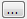

The Vectorization operation
allows the user the
conversion of a raster into vector.
It is accessible through:
Raster Processing > Vectorization... (list of all raster layers will be available)
This wizard consists of the following steps:
Hint:
The resulting vector will be added as a new layer at the TerraView
project
It is accessible through:
Raster Processing > Vectorization... (list of all raster layers will be available)
This wizard consists of the following steps:
Wizard Page 1 - Selection of the layer to execute the operation (Layer Search)
- On the List of Layers select the raster layer to apply the operation.
- Optionally use Filter By Name field giving part of the layer name to help find the layer in the list.
- Press Next to go to next step or Cancel to close the dialog.
Wizard Page 2 - Vectorization parameters
- Select which band from selected layer will be vectorized.
- Optionally the user can define the maximum number of geometries to be created.
- Set the output parameters.
- Repository: Defines where the output data will be saved.
-  Local File.
 Data Source.
Data Source.- Layer Name: Defines the name to create the output layer.